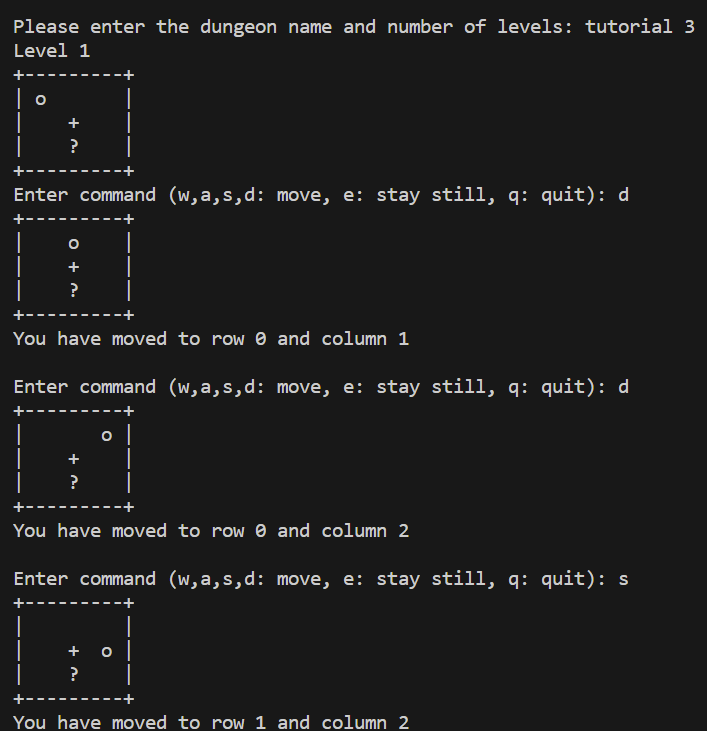
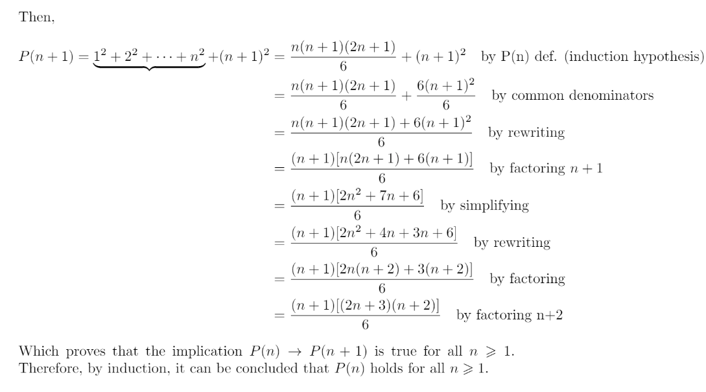

CSCE 120

- Created multiple technically complex C++ programs that covered a plethora of topics including a dungeon crawler game (image shown above), seam carving, linked list manipulation, a temperature query system, and more. Overall, the projects that I completed for this class solidified my understanding of the C/C++ programming language and made me appreciate the small details that make up robust code.
CSCE 222

- Covered many logical problems that are useful in the field of computing such as induction, counting principles that are useful for problems dealing with huge numbers, combinatorial proofs, etc. The work that I completed for this class made me excel in my problem solving skills. After completing the projects for this class, I now have at my disposal many techniques that I can use specifically for computing problems that am I sure to encounter once I get into the industry.
Future Interests
- Because of my interest in database administration, I would be very interested in technical projects that have to do with setting up a server/database. This interests me because with this task, I would be able to see how comfortable I would be in the interplay between working with both complex hardware and software. Ultimately, this describes the purpose of computer engineers and would give me real insight to how prepared I am for industry jobs.